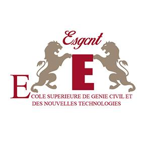

Mon éducation:
Me lançant dans un parcours d'ingénierie diversifié, je suis titulaire d'un DUT en Génie Industriel et Maintenance et d'une Licence en Génie Électrique. Actuellement en dernière année d'un programme d'ingénierie mécatronique, fusion du génie mécanique, de l'électronique, de l'informatique et de l'ingénierie de contrôle, je me suis découvert une profonde passion. Ce parcours éducatif m'a permis d'acquérir une compréhension globale des processus industriels, des systèmes électriques et un ensemble de compétences polyvalentes. Alimenté par le dévouement et l'adaptabilité, je suis prêt à contribuer de manière significative au domaine dynamique de l'ingénierie mécatronique .
1).DUT en Génie Industriel et Maintenance (2019-2021) :
L'ingénierie et la maintenance industrielle constituent un domaine critique dans le domaine plus large de l'ingénierie, se concentrant sur l'optimisation des processus industriels et sur la garantie de la fiabilité et de l'efficacité des équipements et des systèmes. Le génie industriel englobe une gamme de techniques et de méthodologies pour rationaliser les processus de production, minimiser les déchets et améliorer l'efficacité opérationnelle globale dans diverses industries. Cela implique d'analyser les flux de travail, de concevoir des systèmes et de mettre en œuvre des stratégies pour améliorer la productivité, la qualité et la sécurité.
Ecole:

Crée en 1993, l'Ecole Supérieure de Technologie de Meknès est un établissement d'enseignement supérieur universitaire technique à vocation professionnelle. L'ESTM forme des techniciens supérieurs hautement qualifiés dans les domaines de l'électrotechnique, de l'informatique, du management, de la communication et du marketing. La qualité de son encadrement et de ses équipements lui permet d'offrir aux futurs techniciens une formation opérationnelle ouverte sur la vie professionnelle
 ➡️Cours de DUT en génie industriel et maintenance
➡️Cours de DUT en génie industriel et maintenance
2).Licence professionnelle(2022-2023):
Le génie électrique est un domaine diversifié et dynamique qui implique l’étude et l’application des systèmes électriques, de l’électronique et de l’électromagnétisme. Les ingénieurs électriciens conçoivent, développent, testent et supervisent la fabrication de divers composants, systèmes et appareils électriques. Cette discipline englobe un large éventail d'applications, de la production et de la distribution d'énergie aux télécommunications, en passant par l'électronique et les systèmes informatiques. Les ingénieurs électriciens jouent un rôle crucial dans l’avancement de la technologie, en créant des innovations dans les domaines des énergies renouvelables, de l’automatisation, des réseaux de télécommunications et au-delà. Leur expertise s'étend à la résolution de problèmes complexes liés aux circuits électriques, au traitement du signal et aux systèmes de contrôle, contribuant ainsi au développement d'infrastructures modernes et de technologies de pointe qui façonnent notre monde interconnecté
Ecole:
Crée en 1993, l'Ecole Supérieure de Technologie de Meknès est un établissement d'enseignement supérieur universitaire technique à vocation professionnelle. L'ESTM forme des techniciens supérieurs hautement qualifiés dans les domaines de l'électrotechnique, de l'informatique, du management, de la communication et du marketing. La qualité de son encadrement et de ses équipements lui permet d'offrir aux futurs techniciens une formation opérationnelle ouverte sur la vie professionnelle
➡️Cours du LP ingénierie électrique
3).Diplôme d'ingénieur en mécatronique (2021-2024):
L'ingénierie mécatronique est un domaine interdisciplinaire qui intègre de manière transparente l'ingénierie mécanique, l'électronique, l'informatique et l'ingénierie de contrôle pour concevoir et créer des systèmes et des produits intelligents. Dans le domaine de la mécatronique, les ingénieurs fusionnent les principes de la conception mécanique avec le contrôle électronique et l'intelligence informatique pour développer des solutions innovantes. Ce domaine englobe une large gamme d'applications, notamment la robotique, l'automatisation, la fabrication intelligente et les systèmes de contrôle avancés. Les ingénieurs mécatroniques jouent un rôle déterminant dans le développement de machines et de systèmes intelligents capables de détecter, de traiter des informations et d'actionner des processus physiques, conduisant ainsi à des progrès dans des domaines tels que la robotique, la technologie automobile et le génie biomédical. En combinant l'expertise de plusieurs disciplines d'ingénierie, les ingénieurs mécatroniques jouent un rôle central en repoussant les limites de l'innovation technologique et en créant des systèmes sophistiqués et intégrés qui améliorent l'efficacité et la fonctionnalité dans diverses industries.
Ecole:
l'Ecole Supérieure de Génie Civil et des Nouvelles Technologies ESGCNT est un établissement d'enseignement supérieur privé agréé par l'Etat marocain (Ministère de l'Enseignement Supérieur) et situé dans la ville de Meknès. L'originalité du concept de formation ESGCNT réside dans sa devise « innover pour mieux former ». Cette devise s'inscrit dans le mouvement actuel qui considère que l'innovation, moteur du progrès, ne concerne pas seulement les entreprises, mais est aussi une condition de survie pour les établissements universitaires appelés à se positionner sur la scène nationale et internationale de la formation. Un tel concept met l'accent sur le développement de l'esprit d'initiative de l'étudiant et permet le développement de sa créativité, de son esprit d'entreprise et de ses compétences en communication, pour de meilleures perspectives d'employabilité. Soucieux de proposer à ses étudiants des formations recherchées par les entreprises, l'ESGCNT a choisi de se positionner comme avant-gardiste en : former des ingénieurs aux nouvelles technologies, maîtrisant les techniques les plus avancées et possédant de solides connaissances. former des managers dotés de connaissances leur permettant de mieux comprendre le monde dans lequel ils sont appelés à évoluer, offrant à ses étudiants un environnement de travail personnellement enrichissant et à la pointe du progrès technologique. Pour réussir sa mission, l'ESGCNT s'appuie sur des enseignants permanents, un vaste réseau d'enseignants universitaires et des professionnels marocains et étrangers de grande qualité. Elle a également noué des partenariats avec de grandes références européennes et canadiennes.
➡️Cours de diplôme d'ingénieur mécatroniqueGet In Touch
Si vous êtes intéressé ou avez des questions:
Contactez moi en clickant sur le bouton suivant:
CONTACTER MOI